Demystifying delayed aesthetic evaluation: Part 2
Stat ggproto in functional programming terms
June Choe ![]()
This is a developing series of blog posts, scheduled for three parts:
- Part
1: Exploring the logic of
after_stat()to peek inside ggplot internals - Part 2: Exposing the
Statggproto in functional programming terms (you are here) - Part 3: Completing the picture with
after_scale()andstage()(TBD)
Introduction
Let’s pick up where we left off in Part 1. If you’d like to follow along without going back to re-read it, the relevant code that we’ll carry over here is provided below:
Setup from Part 1
# Top-level setup
library(ggplot2)
library(dplyr)
library(palmerpenguins)
set.seed(2022)
theme_set(theme_classic(13))
# Custom function to inspect `after_stat()`
inspect_after_stat <- function(p, i = 1L) {
._env <- environment()
.out <- NULL
suppressMessages({
trace(
what = "ggplot_build.ggplot",
tracer = substitute(assign(".out", data[[i]], envir = ._env), ._env),
at = 19L,
print = FALSE,
where = asNamespace("ggplot2")
)
})
ggplot_build(p)
suppressMessages({
untrace("ggplot_build.ggplot", where = asNamespace("ggplot2"))
})
.out
}
To recap, the big theme of Part
1 was about how each layer of a ggplot transforms the raw
data under the hood to make it “drawing ready” (i.e., the dataframe
returned by layer_data()). We saw that a lot happens over
the course of this data transformation pipeline, one of which is the
statistical transformation step. For example, the
geom_bar() layer uses stat = "count"
(shorthand for stat = StatCount) by default, which computes
new variables like count and prop
internally.
We also saw how after_stat() allows users to declare a
delayed aesthetic mapping, which waits to be applied
until after this statistical transformation step. For example, the
StatCount stat used by geom_bar() specifies
the default implicit mapping to after_stat(count).
Objects like StatCount are called ggproto
objects, and they’re the focus of this Part 2 of the series.
We’ll be digging into the implementational details of the internal
statistical transformation step. Along the way, we’ll encounter some
funny looking functions in the form of
<obj>$<method>(). These are called
ggproto methods - they look pretty scary, but
needlessly so for our purposes: aside from their odd syntax, most of
them are essentially just data wrangling functions that we’re already
familiar with.
Let’s dive right in!
Where it all happens: Stat$compute_layer()
Let’s again use the penguins dataset and visualize
penguin species counts with geom_bar(). This time we’ll
also give the bars width = 0.7 and facet by island:
library(palmerpenguins)
p_bar2 <- ggplot(penguins, aes(x = species)) +
geom_bar(width = 0.7) +
facet_wrap(~ island)
p_bar2

As expected, geom_bar() maps the internally computed
count variable to the y aesthetic by default.
We suspect that something like {dplyr}’s
group_by() and summarize() (or just
count()) is happening in the statistical transformation
stage:
# A tibble: 5 × 3
island species count
<fct> <fct> <int>
1 Biscoe Adelie 44
2 Biscoe Gentoo 124
3 Dream Adelie 56
4 Dream Chinstrap 68
5 Torgersen Adelie 52
In Part
1, I introduced this mystery function called
inspect_after_stat() to show you that this is indeed the
case:
inspect_after_stat(p_bar2)
count prop x width flipped_aes PANEL group
1 44 1 1 0.7 FALSE 1 1
2 124 1 3 0.7 FALSE 1 3
3 56 1 1 0.7 FALSE 2 1
4 68 1 2 0.7 FALSE 2 2
5 52 1 1 0.7 FALSE 3 1
Now it’s time to unveil the mystery behind this function -
inspect_after_stat() was grabbing the return value of the
ggproto method Stat$compute_layer() when it was called for
the first layer of our plot.1
Using the function ggtrace_inspect_return() from my
package {ggtrace},
we can achieve this more explicitly. We pass the function our plot and
the ggproto method we want to inspect, and it gives us what the method
returned:
# install.packages("remotes")
# remotes::install_github("yjunechoe/ggtrace")
library(ggtrace)
compute_layer_output <- ggtrace_inspect_return(p_bar2, Stat$compute_layer)
compute_layer_output
count prop x width flipped_aes PANEL group
1 44 1 1 0.7 FALSE 1 1
2 124 1 3 0.7 FALSE 1 3
3 56 1 1 0.7 FALSE 2 1
4 68 1 2 0.7 FALSE 2 2
5 52 1 1 0.7 FALSE 3 1
If ggproto methods are essentially functions, they should have inputs
and outputs. We just saw the output of
Stat$compute_layer(), but what’s its input?
We can simply swap out ggtrace_inspect_return() with
ggtrace_inspect_args() to look at the arguments that it was
called with:
compute_layer_input <- ggtrace_inspect_args(p_bar2, Stat$compute_layer)
names( compute_layer_input )
[1] "self" "data" "params" "layout"
We can ignore the self and layout arguments
for the moment. The crucial ones are the data and
params arguments, which look like this:
compute_layer_input$data
compute_layer_input$params
$width
[1] 0.7
$na.rm
[1] FALSE
$orientation
[1] NA
$flipped_aes
[1] FALSE
Remember how I said ggproto methods are essentially data wrangling
functions? We can think of Stat$compute_layer() as a
function that takes a dataframe and a list of parameters, and does a
simple data wrangling after grouping by the PANEL and
group columns:
This gets us the a dataframe that’s very similar to the output of
Stat$compute_layer():
compute_layer_fn(compute_layer_input$data, compute_layer_input$params)
# A tibble: 5 × 6
count x width flipped_aes PANEL group
<int> <int> <dbl> <lgl> <fct> <int>
1 44 1 0.7 FALSE 1 1
2 124 3 0.7 FALSE 1 3
3 56 1 0.7 FALSE 2 1
4 68 2 0.7 FALSE 2 2
5 52 1 0.7 FALSE 3 1
So we see that the Stat$compute_layer() method was the
step in the internals responsible for calculating the statistical
summaries necessary to draw our bar layer.
But there’s a catch - the way that the method is written doesn’t
directly reflect this. Nothing about the code for
Stat$compute_layer() says anything about counting:
Stat$compute_layer
function (self, data, params, layout)
{
check_required_aesthetics(self$required_aes, c(names(data),
names(params)), snake_class(self))
required_aes <- intersect(names(data), unlist(strsplit(self$required_aes,
"|", fixed = TRUE)))
data <- remove_missing(data, params$na.rm, c(required_aes,
self$non_missing_aes), snake_class(self), finite = TRUE)
params <- params[intersect(names(params), self$parameters())]
args <- c(list(data = quote(data), scales = quote(scales)),
params)
dapply(data, "PANEL", function(data) {
scales <- layout$get_scales(data$PANEL[1])
tryCatch(do.call(self$compute_panel, args), error = function(e) {
warn(glue("Computation failed in `{snake_class(self)}()`:\n{e$message}"))
new_data_frame()
})
})
}
<bytecode: 0x000002e49ae09aa0>
<environment: namespace:ggplot2>
Where’s the relevant calculation actually happening? For that, we need to go deeper.
Where it specifically happens: StatCount$compute_group()
The actual calculation of counts for the bar layer happens inside
another ggproto method called
StatCount$compute_group():
StatCount$compute_group
function (self, data, scales, width = NULL, flipped_aes = FALSE)
{
data <- flip_data(data, flipped_aes)
x <- data$x
weight <- data$weight %||% rep(1, length(x))
count <- as.numeric(tapply(weight, x, sum, na.rm = TRUE))
count[is.na(count)] <- 0
bars <- new_data_frame(list(count = count, prop = count/sum(abs(count)),
x = sort(unique(x)), width = width, flipped_aes = flipped_aes),
n = length(count))
flip_data(bars, flipped_aes)
}
<bytecode: 0x000002e49b824e38>
<environment: namespace:ggplot2>
We don’t need to dwell on trying to understand the code - let’s dive
straight in with the same ggtrace::ggtrace_inspect_*()
functions.
We see that the return value is actually just one row of the return
value of Stat$compute_layer() that we saw earlier, minus
the PANEL and group columns:2
ggtrace_inspect_return(p_bar2, StatCount$compute_group)
count prop x width flipped_aes
1 44 1 1 0.7 FALSE
As the name suggests, $compute_group() is called for
each group (in this case, bar) in the geom_bar() layer. The
method is called after the layer’s data is split by facet and
group, much like how we used group_by(PANEL, group) to
simulate compute_layer_fn() above.
Using ggtrace_inspect_n() which returns how many times a
ggproto method was called in a plot, we confirm that
StatCount$compute_group() was indeed called five times,
once for each bar in the plot:
ggtrace_inspect_n(p_bar2, StatCount$compute_group)
[1] 5
And we can (mostly) recover the output of
Stat$compute_layer() by combining the return values from
StatCount$compute_group(), all five times it’s called for
the layer. The cond argument here lets us target the
nth time the method is called:
bind_rows(
ggtrace_inspect_return(p_bar2, StatCount$compute_group, cond = 1),
ggtrace_inspect_return(p_bar2, StatCount$compute_group, cond = 2),
ggtrace_inspect_return(p_bar2, StatCount$compute_group, cond = 3),
ggtrace_inspect_return(p_bar2, StatCount$compute_group, cond = 4),
ggtrace_inspect_return(p_bar2, StatCount$compute_group, cond = 5)
)
count prop x width flipped_aes
1 44 1 1 0.7 FALSE
2 124 1 3 0.7 FALSE
3 56 1 1 0.7 FALSE
4 68 1 2 0.7 FALSE
5 52 1 1 0.7 FALSE
So we get a sense that Stat$compute_layer() simply
splits the layer’s data by panel and group, while
StatCount$compute_group() does the heavy lifting.
But what’s the relationship between these two ggproto methods? How
does Stat$compute_layer() know to use
StatCount$compute_group()?
Long story short, the statistical transformation step for
geom_bar() is actually ALL about StatCount. So
Stat$compute_layer() is essentially
StatCount$compute_layer(), but also kind of not.
To understand this distinction fully, we need a slight detour into the world of ggproto.
ggproto, minus the “gg” and the “proto”
There are existing resources for learning how ggproto works, such as Chapter 20 of the ggplot2 book, so I won’t repeat all the details here. In fact, if you’re already familiar with object-oriented programming, the book chapter has all you need. But you’re like me and found it overwhelming at first, then this is for you!
On notations and conventions
My conventions
In this blog post, I’ll refer to ggproto methods like
$method() to distinguish it from normal functions. I’ll
refer to properties (non-function elements of ggproto objects) like
$property to distinguish it from variables.
Also, whenever I’m printing ggproto methods, I’m actually using
get("method", object) behind the scenes. I do this to bring
attention to the method body - printing ggproto methods as-is comes with
extra baggage that distracts from the topic of this blog post. Just be
aware of this when you go exploring ggproto methods yourself:
# This just prints the method body
get("setup_data", Stat)
function (data, params)
{
data
}
<bytecode: 0x000002e49adde200>
<environment: namespace:ggplot2>
# Prints extra stuff we don't care about
# - see: `ggplot2:::format.ggproto_method`
Stat$setup_data
<ggproto method>
<Wrapper function>
function (...)
f(...)
<Inner function (f)>
function (data, params)
{
data
}
{ggplot2} conventions
You might have noticed how ggproto objects are written in upper camel
case like StatCount. This is by convention, but they’re
very important to know and follow. The upper camel case convention for
ggproto objects is closely related to two other conventions:
The first is in the naming of the layer functions we use to write ggplot code and chain with the
+operator, likegeom_bar()andstat_count(). These names are derived from ggproto objects likeGeomBarandStatCountthrough the internal functionggplot2:::snake_class(). Thus, the camel case convention is used to distinguish ggproto objects likeStatCountfrom constructor functions likestat_count(), while maintaining a predictable connection between the two.The second is in the use of character shorthands to refer to ggproto objects inside layer functions, like
geom_bar(stat = "count"). These shorthands work by turning the string into upper camel case using the internal functionggplot2:::camelize(x, first = TRUE)and then prefixing that with"Stat"(or"Geom"or"Position"). So"count"gets converted into"StatCount", which then gets looked up in the caller environment. If a ggproto object breaks this convention, the character shorthand would not work.
Relatedly, note how variable names like StatCount match
the class name class(StatCount)[1]:
class(StatCount)[1]
[1] "StatCount"
This is also by convention and it’s useful for figuring out what
specific Stat/Geom/Position a
layer uses:
When we distill it down to the very basics, ggprotos are essentially lists, and ggproto methods are essentially functions. For our purposes, the only truly new concept you need to know about ggproto methods is that they’re functions that live inside lists.
So StatCount$compute_group() calls the
$compute_group() function defined inside a list called
StatCount, kind of like this:
# Not run
StatCount <- list(
compute_group = function(...) { ... },
...
)
And Stat$compute_layer() calls the
$compute_layer() function defined inside a list called
Stat:
# Not run
Stat <- list(
compute_layer = function(...) { ... },
...
)
The reason why the layer-level statistical transformation for
geom_bar() was handled by Stat$compute_layer()
and not StatCount$compute_layer() is just by technicality.
In fact, StatCount$compute_layer() does “exist”:
StatCount$compute_layer
function (self, data, params, layout)
{
check_required_aesthetics(self$required_aes, c(names(data),
names(params)), snake_class(self))
required_aes <- intersect(names(data), unlist(strsplit(self$required_aes,
"|", fixed = TRUE)))
data <- remove_missing(data, params$na.rm, c(required_aes,
self$non_missing_aes), snake_class(self), finite = TRUE)
params <- params[intersect(names(params), self$parameters())]
args <- c(list(data = quote(data), scales = quote(scales)),
params)
dapply(data, "PANEL", function(data) {
scales <- layout$get_scales(data$PANEL[1])
tryCatch(do.call(self$compute_panel, args), error = function(e) {
warn(glue("Computation failed in `{snake_class(self)}()`:\n{e$message}"))
new_data_frame()
})
})
}
<bytecode: 0x000002e49ae09aa0>
<environment: namespace:ggplot2>
But only in a very specific sense - it just recycles the
$compute_layer() function defined in Stat,
similar to in this implementation:
# Not run
StatCount <- list(
compute_group = function() { ... },
compute_layer = Stat$compute_layer,
...
)
In object-orientated programming terms, this is called
inheritance - the StatCount ggproto is a
child of the parent Stat
ggproto that inherits some of the parent’s methods (like
$compute_layer()) while overriding and defining some of its
own (like $compute_group()).
A note on class inheritance
Class inheritance is reflected in the output of class(),
where order of elements matter:
class(Stat)
[1] "Stat" "ggproto" "gg"
class(StatCount) # see also: `inherits(StatCount, "Stat")`
[1] "StatCount" "Stat" "ggproto" "gg"
By design, all Stat* ggprotos inherit from the top-level
parent Stat ggproto. For example, the
geom_boxplot() layer uses StatBoxplot for its
stat, which also inherits from Stat:
class( geom_boxplot()$stat ) # or `class(StatBoxplot)`
[1] "StatBoxplot" "Stat" "ggproto" "gg"
Sometimes, an inheritance chain can be more complex - for example,
StatDensity2dFilled inherits from
StatDensity2d, which in turn inherits from
Stat:
class( StatDensity2dFilled )
[1] "StatDensity2dFilled" "StatDensity2d" "Stat"
[4] "ggproto" "gg"
But what’s the point of all this? Why do we bother with these clunky ggproto objects instead of having a single function that does all bar-related things, all boxplot-related things, etc.?
Templates and extensions
The rationale behind this inheritance-based design is that the
top-level Stat ggproto serves as a
template that’s meant to be filled and customized.
Another term for this customization is extension -
for example, we say that StatCount is an extension
of Stat. This is what’s technically meant by “ggplot2
extension packages” - these packages provide new Stat* or
Geom* ggproto objects (like ggforce::StatSina
and ggtext::GeomRichtext) that are extensions of the
top-level Stat and Geom ggprotos.
Since Stat is essentially a list and extensions are
essentially a way of customizing certain elements of a template, each
element of Stat can be thought of as a possible
extension point:
names(Stat)
[1] "compute_layer" "parameters" "aesthetics" "setup_data"
[5] "retransform" "optional_aes" "non_missing_aes" "default_aes"
[9] "finish_layer" "compute_panel" "extra_params" "compute_group"
[13] "required_aes" "setup_params"
Some extension points are “methods” (functions) and others are “properties” (non-functions):
sapply(Stat, class)
compute_layer parameters aesthetics setup_data retransform
"function" "function" "function" "function" "logical"
optional_aes non_missing_aes default_aes finish_layer compute_panel
"character" "character" "uneval" "function" "function"
extra_params compute_group required_aes setup_params
"character" "function" "character" "function"
If you want to know what each of these methods and properties are for, you can read up on the package vignette on ggproto. But we don’t need to know every detail - only a handful are productive extension points.
Below are a few examples of specific Stat* extensions
(e.g., StatCount) and information about what
methods/properties they modify from the top-level Stat
ggproto:
Try to get a feel for what kind of methods and properties are the common targets of extensions. Pay specific attention to the distribution of methods highlighted in green.
StatCount
get_method_inheritance(StatCount)
$Stat
[1] "aesthetics" "compute_layer" "compute_panel" "finish_layer"
[5] "non_missing_aes" "optional_aes" "parameters" "retransform"
[9] "setup_data"
$StatCount
[1] "compute_group" "default_aes" "extra_params" "required_aes"
[5] "setup_params"
StatBoxplot
get_method_inheritance(StatBoxplot)
$Stat
[1] "aesthetics" "compute_layer" "compute_panel" "default_aes"
[5] "finish_layer" "optional_aes" "parameters" "retransform"
$StatBoxplot
[1] "compute_group" "extra_params" "non_missing_aes" "required_aes"
[5] "setup_data" "setup_params"
StatDensity
get_method_inheritance(StatBin)
$Stat
[1] "aesthetics" "compute_layer" "compute_panel" "finish_layer"
[5] "non_missing_aes" "optional_aes" "parameters" "retransform"
[9] "setup_data"
$StatBin
[1] "compute_group" "default_aes" "extra_params" "required_aes"
[5] "setup_params"
StatSmooth
get_method_inheritance(StatSmooth)
$Stat
[1] "aesthetics" "compute_layer" "compute_panel" "default_aes"
[5] "finish_layer" "non_missing_aes" "optional_aes" "parameters"
[9] "retransform" "setup_data"
$StatSmooth
[1] "compute_group" "extra_params" "required_aes" "setup_params"
StatBin
get_method_inheritance(StatBin)
$Stat
[1] "aesthetics" "compute_layer" "compute_panel" "finish_layer"
[5] "non_missing_aes" "optional_aes" "parameters" "retransform"
[9] "setup_data"
$StatBin
[1] "compute_group" "default_aes" "extra_params" "required_aes"
[5] "setup_params"
StatBin
get_method_inheritance(StatContour)
$Stat
[1] "aesthetics" "compute_layer" "compute_panel" "extra_params"
[5] "finish_layer" "non_missing_aes" "optional_aes" "parameters"
[9] "retransform" "setup_data"
$StatContour
[1] "compute_group" "default_aes" "required_aes" "setup_params"
Did you notice how all these Stat* extensions define
their own $compute_group() method while inheriting the
$compute_layer() and $compute_panel() methods
from the parent stat? This is the intended design - check
out how Stat$compute_group() is defined:
Stat$compute_group
function (self, data, scales)
{
abort("Not implemented")
}
<bytecode: 0x000002e49ae09838>
<environment: namespace:ggplot2>
And this is what I mean by “the top-level Stat ggproto
is a template”. The Stat provides an infrastructure that
splits the data up by layer (Stat$compute_layer()) and
panel (Stat$compute_panel()), but leaves it to the child
Stat* ggprotos to fill in the details about what
statistical summaries are computed by group, after this splitting takes
place.
How are Stat$compute_layer() and
Stat$compute_panel() implemented?
In $compute_layer(), the data is split by values of the
PANEL column using an internal function
ggplot2:::dapply(), and $compute_panel() is
called on each split.
Stat$compute_layer
function (self, data, params, layout)
{
check_required_aesthetics(self$required_aes, c(names(data),
names(params)), snake_class(self))
required_aes <- intersect(names(data), unlist(strsplit(self$required_aes,
"|", fixed = TRUE)))
data <- remove_missing(data, params$na.rm, c(required_aes,
self$non_missing_aes), snake_class(self), finite = TRUE)
params <- params[intersect(names(params), self$parameters())]
args <- c(list(data = quote(data), scales = quote(scales)),
params)
dapply(data, "PANEL", function(data) {
scales <- layout$get_scales(data$PANEL[1])
tryCatch(do.call(self$compute_panel, args), error = function(e) {
warn(glue("Computation failed in `{snake_class(self)}()`:\n{e$message}"))
new_data_frame()
})
})
}
<bytecode: 0x000002e49ae09aa0>
<environment: namespace:ggplot2>
In $compute_panel(), the data is first split by values
of the group column using the split()
function, then $compute_group() is called on each split
inside lapply().
Stat$compute_panel
function (self, data, scales, ...)
{
if (empty(data))
return(new_data_frame())
groups <- split(data, data$group)
stats <- lapply(groups, function(group) {
self$compute_group(data = group, scales = scales, ...)
})
stats <- mapply(function(new, old) {
if (empty(new))
return(new_data_frame())
unique <- uniquecols(old)
missing <- !(names(unique) %in% names(new))
cbind(new, unique[rep(1, nrow(new)), missing, drop = FALSE])
}, stats, groups, SIMPLIFY = FALSE)
rbind_dfs(stats)
}
<bytecode: 0x000002e49ade76f0>
<environment: namespace:ggplot2>
These two methods are implemented slightly differently, though the exact details are not relevant to the current discussion.3
Lastly, a note about self. The self
variable is a reference to the ggproto object that called the method.4 In the context of
p_bar2, the self is
StatCount:
class( ggtrace_inspect_args(p_bar2, Stat$compute_layer)$self )
[1] "StatCount" "Stat" "ggproto" "gg"
This may be surprising given how $compute_layer() lives
inside Stat, not StatCount. This is an odd
thing about object oriented programming with ggproto that you’ll have to
get used to. Just remember that the choice of the ggproto object is
determined by the layer (e.g., stored in geom_bar()$stat)
and that the self variable keeps track of which
ggproto object called a method (context-dependent);
but all of this is separate from the issue of where a method is
defined in (context-independent).
In other words, self is StatCount because
the method $compute_layer() is “looked up” by
StatCount. The fact that the actual
$compute_layer() method is defined inside
Stat$compute_layer() is irrelevant here (though it may be
relevant for other purposes).
In the next section, we’ll look at how the $compute_*()
family of methods behave in the internals.
Wait - what about the other common extension points?
You might have also noticed a few more repeated extension points
other than $compute_group(). They usually form some subset
of $default_aes, $required_aes,
$setup_data(), $setup_params(), and
$extra_params. These are also like a family - their job is
to prepare the layer’s data before it’s sent off to the
$compute_*() family of methods.
For example, here’s a walkthrough of how StatCount
prepares the data:
First, the default aesthetic mappings are specified such that
both x and y are mapped to
after_stat(count):
# or `geom_bar()$stat$default_aes`
StatCount$default_aes
Aesthetic mapping:
* `x` -> `after_stat(count)`
* `y` -> `after_stat(count)`
* `weight` -> 1
Second, the required aesthetic mappings are specified such that
exactly one of x or y must
be provided:
# or `geom_bar()$stat$required_aes`
StatCount$required_aes
[1] "x|y"
By requiring the user to supply one of the two aesthetics, the one
left over takes on the “implicit” value of
after_stat(count). This is largely handled in
StatCount$setup_params():
# Lots of code here but it does 3 things:
# 1) Check if user supplied `y`, not `x` (+ track this in `flipped_aes`)
# 2) Make sure user supplied exactly one of `x` or `y`
# 3) If `flipped_aes` (= `y` is supplied), pretend that it's `x` but
# keep that for later (reverted in `StatCount$compute_group()`)
StatCount$setup_params
function (data, params)
{
params$flipped_aes <- has_flipped_aes(data, params, main_is_orthogonal = FALSE)
has_x <- !(is.null(data$x) && is.null(params$x))
has_y <- !(is.null(data$y) && is.null(params$y))
if (!has_x && !has_y) {
abort("stat_count() requires an x or y aesthetic.")
}
if (has_x && has_y) {
abort("stat_count() can only have an x or y aesthetic.")
}
if (is.null(params$width)) {
x <- if (params$flipped_aes)
"y"
else "x"
params$width <- resolution(data[[x]]) * 0.9
}
params
}
<bytecode: 0x000002e49b8212e8>
<environment: namespace:ggplot2>
Lastly, the role of $extra_params is kind
of weird, but in this case it simply says that
StatCount has support for handling different orientations
(which gets standardized to flipped_aes internally).
Stat$extra_params
[1] "na.rm"
StatCount$extra_params
[1] "na.rm" "orientation"
In case you didn’t know already, orientation is a relatively new
(v3.3.0) argument supported by some layers. It’s allows individual
layers to be “flipped” without applying coord_flip() to the
whole plot:
The $compute_*() family of methods
Here, let’s look at how the statistical transformation is implemented
in the $compute_*() family of methods. The
p_bar2 ggplot is printed again below.
p_bar2
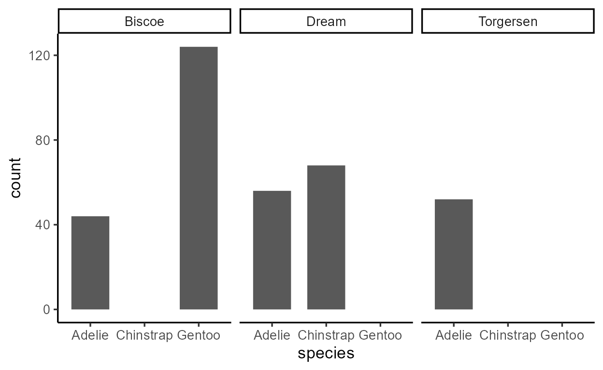
The geom_bar() layer in our plot computes and draws five
bars across three panels. This is reflected in the number of calls to
the $compute_*() methods:
- One call to
Stat$compute_layer()for our one bar layer
ggtrace_inspect_n(p_bar2, Stat$compute_layer)
[1] 1
- Three calls to
Stat$compute_panel()for three facets in the bar layer
ggtrace_inspect_n(p_bar2, Stat$compute_panel)
[1] 3
- Five calls to
StatCount$compute_group()for five bars across the three facets
ggtrace_inspect_n(p_bar2, StatCount$compute_group)
[1] 5
Keep in mind that there’s a hierarchy to how the
$compute_*() functions are called:
Stat$compute_layer()
|--- Stat$compute_panel()
|--- StatCount$compute_group()
|--- StatCount$compute_group()
|--- Stat$compute_panel()
|--- StatCount$compute_group()
|--- StatCount$compute_group()
|--- Stat$compute_panel()
|--- StatCount$compute_group()
The $compute_*() family of functions implement what’s
called a split-apply-combine design. If you haven’t
heard of it before, it’s basically like the “divide and conquer”
strategy: you break down the problem to the smallest, most essential
pieces, work on them individually, then bring them together into one
solution.
Play around with the expandable nested tables below to get a sense of
what kind of information is passed down to the
$compute_group() method, and what each
$compute_group() call returns for the bar layer in our
plot:
1) Split
The $compute_layer() method first splits up the data by
facet and passes them down to $compute_panel(). Then, the
$compute_panel() method splits up the data by group and
passes them down to $compute_group().
2) Apply
The $compute_group() method applies to each of the
splits and returns a modified data:
3) Combine
The output of $compute_group() calls are combined by
panel and returned by $compute_panel(), then combined again
and returned by $compute_layer():
The layer’s data frame representation
Remember how I said that the output of
Stat$compute_layer() for our geom_bar() layer
is the dataframe representation of the layer at a
particular stage in the pipeline? If this dataframe representation were
to change, then it would affect how the layer gets drawn down the
line.
We saw how Stat* extensions do this by changing how a
ggproto method is defined (namely, via $compute_group()).
But we can also test this on-the-fly as well, without writing a whole
ggproto extension ourselves.
For example, we can modify the output of
Stat$compute_layer() that we grabbed with
ggtrace_inspect_return() before and save it to a new
variable:
count prop x width flipped_aes PANEL group
1 1936 1 1 0.7 FALSE 1 1
2 15376 1 3 0.7 FALSE 1 3
3 3136 1 1 0.7 FALSE 2 1
4 4624 1 2 0.7 FALSE 2 2
5 2704 1 1 0.7 FALSE 3 1
Then, we force Stat$compute_layer() to return that
modified dataframe instead when it’s called for p_bar2, by
passing it to the value argument of
ggtrace_highjack_return():
ggtrace_highjack_return(
p_bar2, Stat$compute_layer,
value = modified_compute_layer_output
)
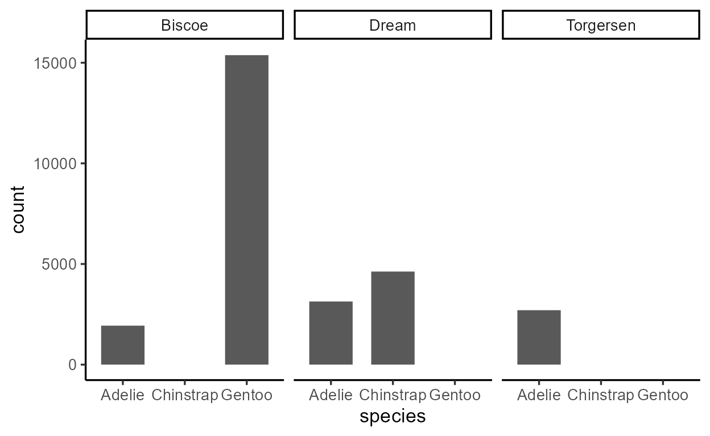
See how this has direct consequences for our plot?
Here’s another one - we can modify the dataframe about to be returned
by StatCount$compute_group(), targeting just the third time
it’s called, with cond = 3. This time we do the
modification in place by passing an expression to the
value argument, where returnValue() evaluates
to the value about to be returned by the method:
ggtrace_highjack_return(
p_bar2, StatCount$compute_group, cond = 3,
value = quote({
returnValue() %>%
mutate(count = count ^ 2)
})
)
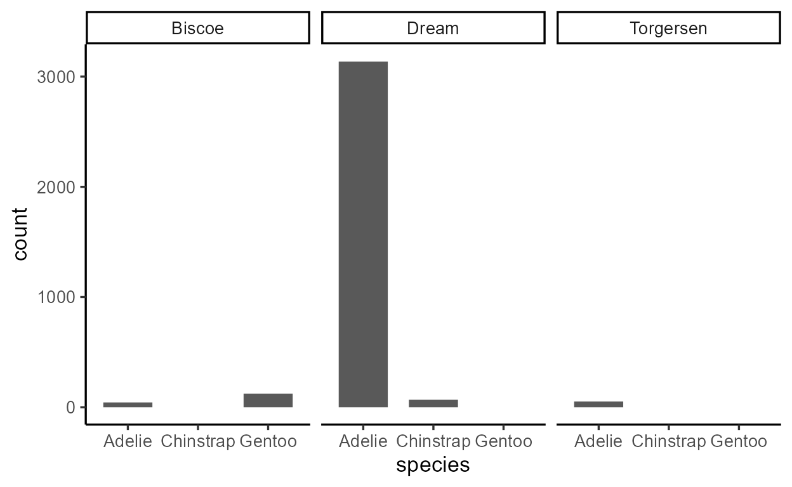
Again, a big consequence for the plot down the line.
The lesson here is that the dataframe representation of the
layer undergoes incremental updates in the internals, gradually
working up to its final drawing-ready form that we can see using
layer_data().
layer_data(p_bar2)
y count prop x flipped_aes PANEL group ymin ymax xmin xmax colour fill
1 44 44 1 1 FALSE 1 1 0 44 0.65 1.35 NA grey35
2 124 124 1 3 FALSE 1 3 0 124 2.65 3.35 NA grey35
3 56 56 1 1 FALSE 2 1 0 56 0.65 1.35 NA grey35
4 68 68 1 2 FALSE 2 2 0 68 1.65 2.35 NA grey35
5 52 52 1 1 FALSE 3 1 0 52 0.65 1.35 NA grey35
size linetype alpha
1 0.5 1 NA
2 0.5 1 NA
3 0.5 1 NA
4 0.5 1 NA
5 0.5 1 NA
In this sense, ggproto methods are like functions that intervene at different steps of what is essentially a data wrangling pipeline, making piecemeal changes to the layer data. Consequently, the work of a single ggproto method can have far reaching consequences for the plot down the line.
I promise this is the end of the {ggtrace} self-promo,
but I encourage you to play around with the internals using the workflow
functions from the package - it can help refine your intuitions about
how ggplot internals work, with low barrier and no risk. Check out the
package website if
you’d like to know more.
Other $compute_*() extensions
Before we wrap up, I have to come clean - I’ve actually been
misleading you in instilling this divide between
$compute_layer() and $compute_panel() on one
hand, and $compute_group() on the other. Of course,
$compute_group() is the most natural extension point, but
nothing stops you from doing the necessary calculations in
$compute_layer() or $compute_panel()
instead.
In fact, there are several circumstances where you don’t want to do things at the group level:
The first reason is for efficiency. Consider the case of
geom_point() - it’s a layer that draws points from
x and y values, as is. The stat
ggproto for this layer is StatIdentity, and all it does in
the $compute_*() step is to return the data as it received
it.
class( geom_point()$stat )
[1] "StatIdentity" "Stat" "ggproto" "gg"
One way of implementing this is to define a
StatIdentity$compute_group() that just returns
data, but this is unnecessarily complex - you’re still
splitting the data by panel and group, only to not do anything with
it.
Therefore, the appropriate extension point is actually
$compute_layer() - you return the data as soon as you
receive it, without forwarding the data to $compute_panel()
and $compute_group(). Indeed, that’s how
StatIdentity is actually implemented.
get_method_inheritance(StatIdentity)
$Stat
[1] "aesthetics" "compute_group" "compute_panel" "default_aes"
[5] "extra_params" "finish_layer" "non_missing_aes" "optional_aes"
[9] "parameters" "required_aes" "retransform" "setup_data"
[13] "setup_params"
$StatIdentity
[1] "compute_layer"
StatIdentity$compute_layer
function (self, data, params, layout)
{
data
}
<bytecode: 0x000002e4a4084350>
<environment: namespace:ggplot2>
A second reason is that sometimes you need to do calculations at the
panel level, not the group level. This is the case for
StatUnique. It’s an uncommon stat that’s mainly used to
deal with overplotted text by removing duplicates in the dataframe
representation of the layer.5
It’s subtle (you need to zoom in to the plots to see), but there’s a
difference in quality between overlapping text on the left (with the
StatIdentity default) versus the solution on the right with
StatUnique.
Figure 1: Zoomed in to the letter “S” from the two plots.
You might think that StatUnique$compute_layer() is
returning unique(data) at the layer level, but consider
this behavior of StatUnique:
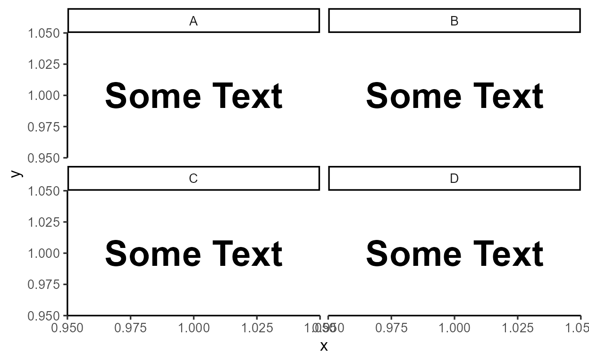
We see that StatUnique doesn’t remove just any data
point duplicates - it removes duplicates within each facet.
Thus, unique(data) is implemented inside
StatUnique$compute_panel(), which is more in line with the
goal of preventing visually overlapping text.
get_method_inheritance(StatUnique)
$Stat
[1] "aesthetics" "compute_group" "compute_layer" "default_aes"
[5] "extra_params" "finish_layer" "non_missing_aes" "optional_aes"
[9] "parameters" "required_aes" "retransform" "setup_data"
[13] "setup_params"
$StatUnique
[1] "compute_panel"
StatUnique$compute_panel
function (data, scales)
unique(data)
<bytecode: 0x000002e4a28c4838>
<environment: namespace:ggplot2>
Lastly, there are rare cases of where you’d want to extend multiple
$compute_*() methods at once. For example,
StatYdensity is used by geom_violin() to
calculate the size and shape of violins, and it extends both
$compute_panel() and $compute_group():
class( geom_violin()$stat )
[1] "StatYdensity" "Stat" "ggproto" "gg"
get_method_inheritance(StatYdensity)
$Stat
[1] "aesthetics" "compute_layer" "default_aes" "finish_layer"
[5] "optional_aes" "parameters" "retransform" "setup_data"
$StatYdensity
[1] "compute_group" "compute_panel" "extra_params" "non_missing_aes"
[5] "required_aes" "setup_params"
This is done to create an effect where densities are calculated per group, and then scaled within each facet. Note how violin areas are equal within a facet but not across facets.6
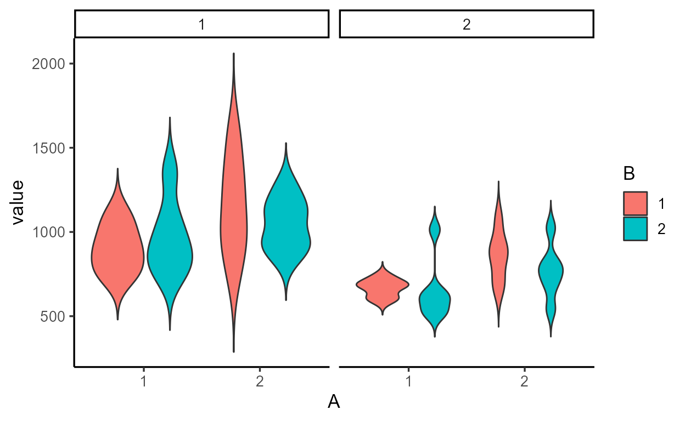
Conclusion
In Part
1, we were introduced to this idea of there being a data
frame representation for each layer, which gets updated and
augmented over the course of rendering a ggplot. We saw how one of the
changes to the layer data is the statistical
transformation whereby new variables like count
are computed internally and become available for delayed
aesthetic mapping using after_stat(). We saw how
this statistical transformation step isn’t as scary as it looks - it
looked like a standard data wrangling procedure that we could express
with group_by() and summarize().
The goal of Part 2 was to expose the exact details of
the statistical transformation step. We had our first encounter with
ggproto methods which we can think of as data wrangling
functions that live inside lists. We saw how a family of
$compute_*() methods called by-layer, by-facet, and
by-group implement a split-apply-combine process much
like the group_by() + summarize() combo. We
also learned that the motivation behind this odd-looking ggproto system
is to support an extension mechanism that allows us to
subclass new Stat* and Geom* ggprotos that
define their own custom behavior for a method like
$compute_group().
Sorry if Part 2 was a bit too theoretical! In Part 3, we’ll leave
this whole ggproto thing behind to talk about after_scale()
and stage(), two more delayed aes eval functions.
Sneak peak of Part 3
I’ll leave you with two examples as a teaser:
Example 1: after_scale() is like
after_stat(), but targets the data after the
(non-positional) scale transformation step, which
happens towards the end of the build pipeline:
library(colorspace)
p_boxplot <- penguins %>%
filter(!is.na(flipper_length_mm)) %>%
ggplot(aes(x = species, y = flipper_length_mm, fill = species)) +
geom_boxplot(
aes(color = after_scale(darken(fill, .5))),
width = .4
) +
theme_classic()
p_boxplot
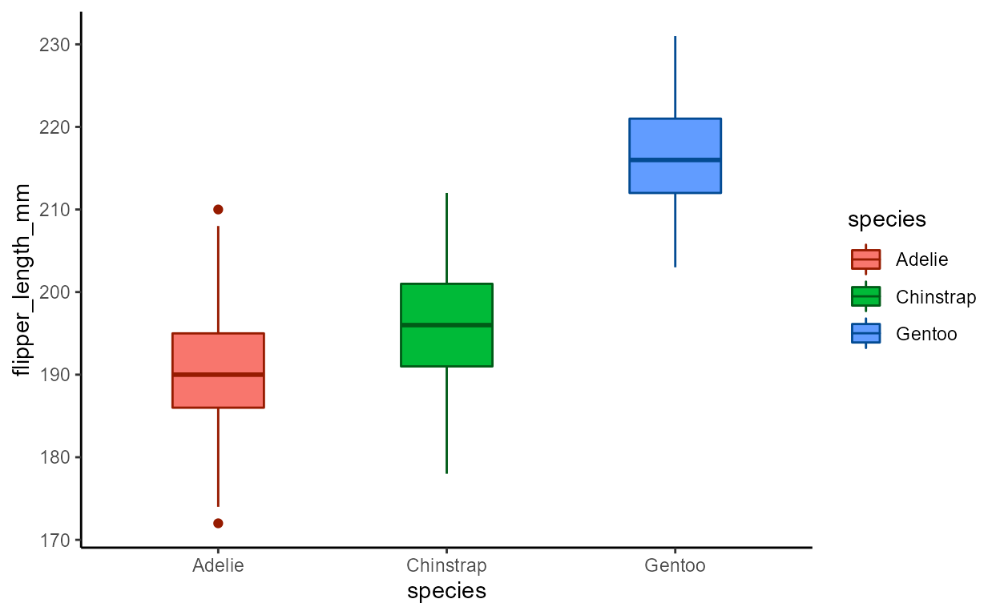
Example 2: stage() allows you to re-map to the same
aesthetic using variables from different points in the build
pipeline.
# Generates warning in v3.3.6; fixed in dev version (PR #4707)
p_boxplot +
geom_text(
aes(y = stage(flipper_length_mm, c(lower, middle, upper)),
label = after_stat(c(lower, middle, upper)),
color = after_scale(darken(fill, .8))),
size = 4, hjust = 1,
position = position_nudge(x = .5),
stat = StatBoxplot
) +
theme_classic()
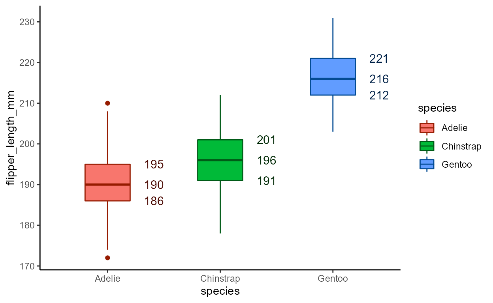
A taste of writing ggproto extensions
Though writing ggproto extensions is beyond the scope of this blog
series,7 we’re now well prepared for it after
working through the logic of how the top-level template
Stat ggproto gets extended in child Stat*
ggprotos like StatCount. All that’s missing is the syntax
that implements this (that’s usually the easy part!).
Just to give you a taste without going into it too deep, this is an
example stat extension inspired by Gina Reynolds that calculates
an internal variable called rowid inside
$compute_layer() and also sets a default aesthetic mapping
of label = after_stat(rowid) in
$default_aes:
StatRowID <- ggplot2::ggproto(
# Create a new ggproto of class "StatRowID"
`_class` = "StatRowID",
# That inherits from the top-level `Stat` ggproto
`_inherit` = Stat,
# Extension point: add a `rowid` column to the data at layer-level
compute_layer = function(self, data, params, layout) {
data$rowid <- seq_len(nrow(data))
data
},
# Extension point: map the computed `rowid` variable to `label`
default_aes = aes(label = after_stat(rowid))
)
tibble(x = runif(20), y = runif(20), g = rep(c("A", "B"), each = 10)) %>%
ggplot(aes(x, y, fill = g)) +
geom_label(stat = StatRowID) # or "RowID"
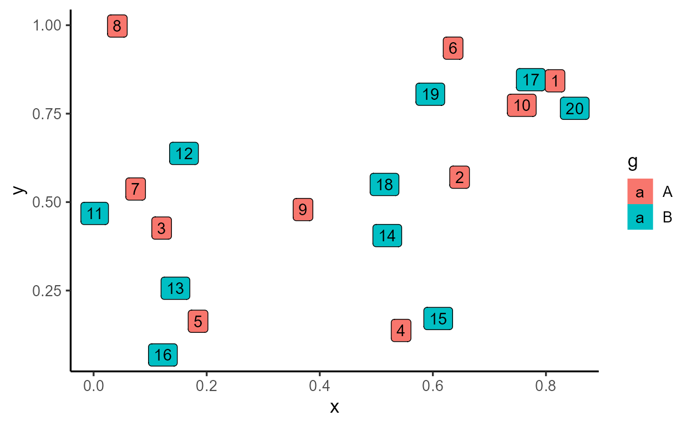
If we wanted row IDs to be calculated by group, we simply move the
computation to $compute_group()
StatRowIDbyGroup <- ggplot2::ggproto(
`_class` = "StatRowIDbyGroup",
`_inherit` = Stat,
default_aes = aes(label = after_stat(rowid)),
# Extend `compute_group` instead of `compute_layer`
compute_group = function(self, data, scales) {
data$rowid <- seq_len(nrow(data))
data
}
)
tibble(x = runif(20), y = runif(20), g = rep(c("A", "B"), each = 10)) %>%
ggplot(aes(x, y, fill = g)) +
geom_label(stat = StatRowIDbyGroup) # or "RowIDbyGroup"
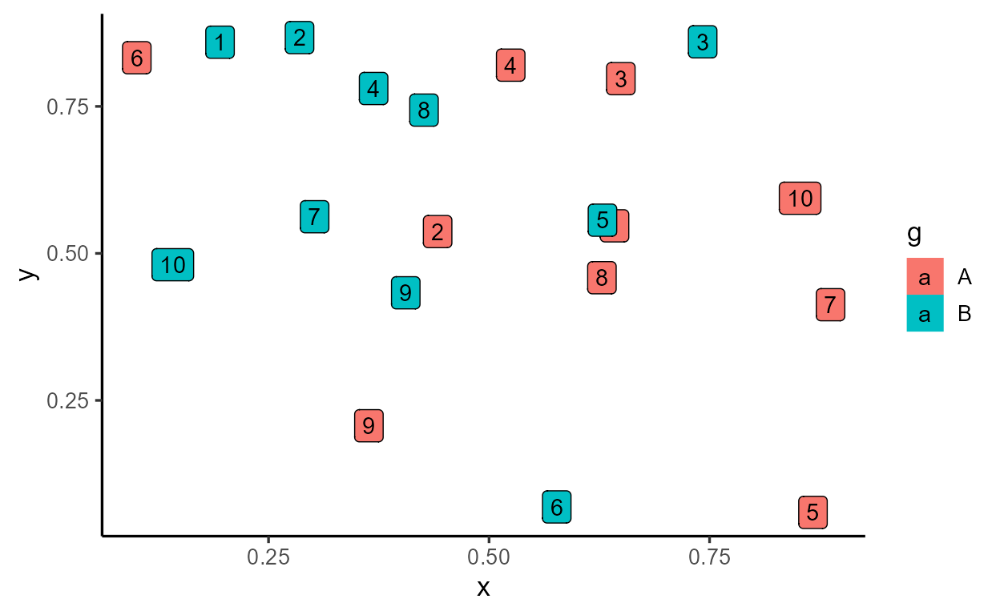
If the sensible use of statRowIDbyGroup is for it to be
paired with the label geom, then we write a layer function (also called
a constructor function) that wraps around
ggplot2::layer(). Inside stat_rowid(), we hard
code stat = StatRowIDbyGroup and expose the
geom = "label" default argument to the user:
stat_rowid <- function(mapping = NULL, data = NULL,
geom = "label", position = "identity",
..., na.rm = FALSE, show.legend = NA, inherit.aes = TRUE) {
ggplot2::layer(
# All layers need data and aesthetic mappings
data = data, mapping = mapping,
# The layer's choice of Stat, Geom, and Position
stat = StatRowIDbyGroup, geom = geom, position = position,
# Standard parameters available for all `layer()`s (there are more)
show.legend = show.legend, inherit.aes = inherit.aes,
# Arguments to be passed down to Stat/Geom/Position
params = list(na.rm = na.rm, ...)
)
}
tibble(x = runif(20), y = runif(20), g = rep(c("A", "B"), each = 10)) %>%
ggplot(aes(x, y, fill = g)) +
stat_rowid()
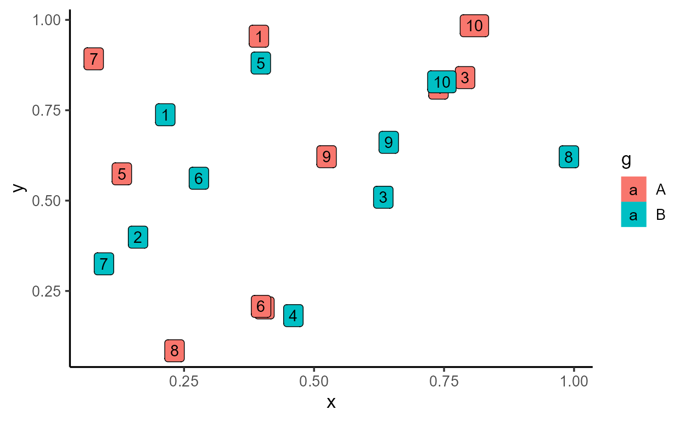
By following these design principles, you get a lot of features for
free, like the ability to swap out the geom and map the internally
calculated rowid variable elsewhere via
after_stat():
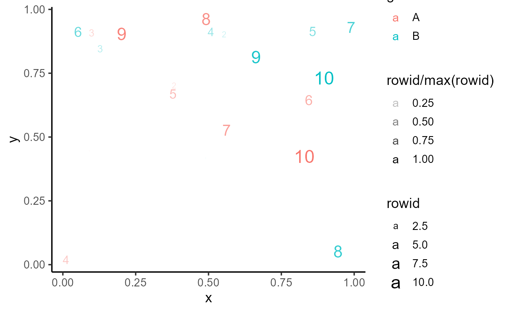
If you’re feeling ambitious, I highly recommend starting with Thomas Lin Pedersen’s rstudio::conf talk. Good luck!
Footnotes
Technically, it was returning the output of
ggplot2:::Layer$compute_statistic()which returns the$compute_layer()method called by the layer’s stat. But we don’t need to worry about this distinction for this blog post.↩︎Missing columns get added back in when
$compute_panel()combines the output of$compute_group()calls.↩︎For example, one big difference is that parameters are passed in as a list to the
paramsargument ofcompute_layer(), which is then spliced and passed in as the...ofcompute_panel()throughdo.call().↩︎It’s actually optional and only available if the method specifies an argument called
self. As long as it’s present in the formals, it can appear in any position. The convention is to define all ggproto methods withselfas the first argument.↩︎An alternative solution that I personally prefer is
annotate(geom = "text", ..).↩︎I’m not sure about the rationale for this, and people have brought up wanting to change this default. Given everything we’ve discussed so far, we don’t have to read the source code to know that if you want all violins in the layer to have the same size, we should move the calculations in
$compute_panel()to$compute_layer()instead.↩︎Other resources exist for that (in fact, most resources on learning the internals focus on writing extensions). Chapter 20 and 21 of the ggplot2 book is a good place to start.↩︎
Citation
@online{choe2022,
author = {Choe, June},
title = {Demystifying Delayed Aesthetic Evaluation: {Part} 2},
date = {2022-07-06},
url = {https://yjunechoe.github.io/posts/2022-07-06-ggplot2-delayed-aes-2/},
langid = {en}
}